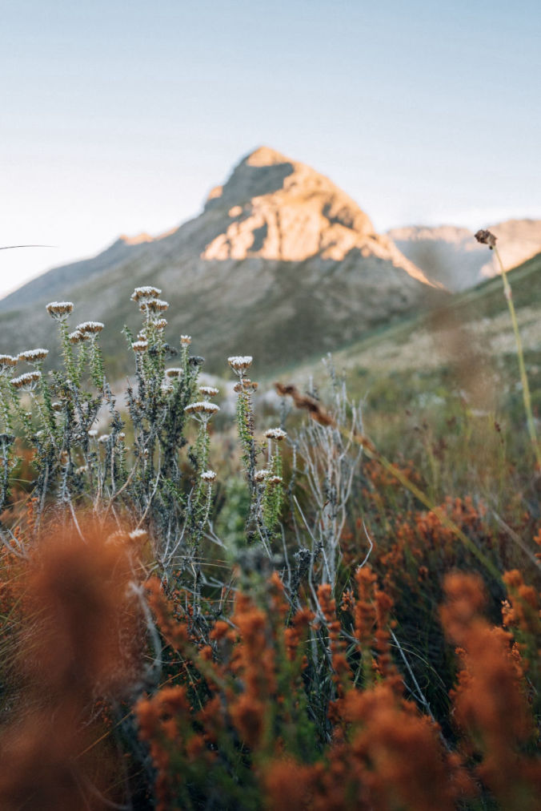

When searching for a videographer South Africa, choose someone who captures more than just beautiful images, they bring your story to life with a clear strategy.
You’re doing work that actually means something, but getting people to notice can be tough. Social media moves fast, and it’s easy for your message to get lost in the noise. Sometimes words just don’t cut it. That’s where we come in. At Munjiri Videos, we help purpose-led brands in South Africa share their stories through real, heartfelt video content, so the right people see it and feel it.
We’re Katy and Eugene a friendly, videographer South Africa team, who started Munjiri Videos in Zambia, since then, we’ve worked with purpose-driven brands, NGOs, and creatives across Africa and Europe. Whether it’s a quiet moment in nature or a big campaign, we bring the calm focus you’d expect from an experienced videographer South Africa duo.
As a videographer South Africa team, we keep things simple and flexible to suit what you need:
Brand Videos for Your Website: Clear, honest storytelling that helps people understand who you are and what you do.
Monthly Social Media Packages: Regular, engaging videos to keep your brand visible without adding to your to-do list.
Flexible Video Options: Big or small, we’ll shape the project around your goals, timeline, and budget.
Whatever you’re after, we’re here as your go-to videographer South Africa team to make video feel easy, genuine, and impactful.
Our Story-First Production Process, refined from our work as a videographer South Africa service, is designed to make things easy...
1. Discovery
We start with a relaxed chat to learn about your goals, audience, and message. This helps us understand your story clearly.
2. Creative Planning
We shape your story with scriptwriting, storyboards, and choosing the right locations, all designed to fit your vision.
3. Filming
We keep the shoot calm and professional, focusing on capturing real moments in a friendly, team approach.
4. Editing
We select the best clips and add music, sound, and graphics to make a video that connects and tells your story well.
5. Delivery & Support
We deliver your video in the formats you need and give you tips on sharing it to get the most views and impact.


Don't just take our word for it. Here's what some of our clients have to say:
"Working with Katy was a great experience and also really fun! She went the extra mile to help me achieve everything I wanted to include in the film. She is so professional but also very easygoing and importantly was able to help me to feel relaxed during filming. I am really happy with the results and would highly recommend Munjiri Videos."
Sarah Rueger, Amaranthine Skincare
"We absolutely loved working with Katy and Eugene. They were so professional from start to finish and managed to capture Heartfelt beautifully. We would highly recommend them and will definitely work with them again."
Julie Hadley, The Heartfelt Project
"Katy did a superb job and rapidly understood what we were trying to achieve and provided excellent ideas about how to create a stunning visual feast, backed up by a perfectly judged soundtrack and a compelling narrative. She made great use of a range of film making techniques to highlight the unique features of Embo House and its location, creating an atmosphere which fully chimes with our target clientele. She was innovative and flexible in her approach, but also very focused on getting the detail and message right. Last, but not least, Katy was fun to work with despite the need to complete the project in a short, intense time-frame. We can not recommend her highly enough."
Ginny Knox , Embo House
We keep things simple and real. Here’s why people like working with us as their videographer South Africa Team:
We don’t just make things look good we tell real stories that help your audience feel something.
We mix storytelling, great visuals, and solid technical skills with marketing, so your content doesn’t just look pretty, it gets seen by the right people.
We often work with clients who feel daunted by the whole video process unsure how to capture their story or worried about it looking ‘salesy’ or forced.
Whether you're a small team, an up-and-coming brand, or a global NGO, we keep the process simple, collaborative, and focused on what really matters to you and your community.
As a videographer South Africa team, we've been lucky to work across some amazing locations, from the dramatic cliffs of Cape Town to the wild plains of Kruger, South Africa is full of incredible filming locations. We’ve captured city stories in Johannesburg, serene landscapes in the Cederberg, and wildlife in the Kgalagadi.


Ready to capture your story? Get in touch with Munjiri Videos today, your trusted videographer South Africa team and let’s create something amazing together! You can reach us by emailing katy@munjiri.com
Have questions about hiring a videographer South Africa team? We’ve got answers.
1. How much does it cost to hire a videographer in South Africa?
Prices vary depending on the project type, length, and complexity. We offer custom quotes to fit your specific needs.
2. What should I look for when choosing a videographer in South Africa?
Look for experience, a portfolio you like, good testimonials, and someone who understands your vision and values.
3. What’s included in a typical videography package?
Most packages include planning, filming, editing, and delivery of the final video. We can also customize to suit your project.
4. How long does it take to get the finished video?
Depending on the project, editing and delivery usually take between 2 to 8 weeks.
5. Do you offer drone videography in South Africa?
Yes! We provide drone footage for stunning aerial shots to make your video stand out.
6. Can you work in different locations across South Africa?
Absolutely. We film in cities like Cape Town, Johannesburg, Kruger National Park, and many other beautiful spots.
7. How do you ensure the video reflects my brand’s story?
We work closely with you from start to finish to capture your message in an authentic and meaningful way.

Brand Video Production
Social Media Video Production
Nature Video Production
Creative Video Productions
Charity Video Production
Drone Videographer
Event Video Production
Product Video Production
Travel Video Production
Learn Video Making
Video Storytelling
Video Making Tips
Video Marketing & Social Media Strategies
Nature Stories
Behind the Scenes
Client Stories
Locations & Travel
Location
Based in Portugal and South Africa, offering video production services worldwide.
Email: katy@munjiri.com
Get updates and free resources.